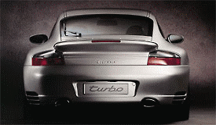
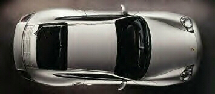

Porsche 911 Turbo


Brake from 60mph-0 in about 2.6sec.
Specs
Price |
N/A |
Top Speed |
190mph(est.) |
Acceleration |
|
Engine |
|
0-30mph |
N/A |
Type |
Twin Turbo Flat-6 w/ Variable intake timing, 24valve DOHC |
0-60mph |
4.4sec |
Displacement |
3.6L |
0-100 |
9.3sec |
Power |
420hp@6000rpm |
1/4 mile |
N/A |
Torque |
412 lbs-ft@2700rpm |
Weight |
N/A |
Handling |
|
Gas mileage |
|
Skidpad |
N/A |
City |
N/A |
600ft slalom |
N/A |
Highway |
N/A |
Powertrain |
Rear engined, All wheel drive, 6 speed manual |
(? = incomplete data or unverified info, N/A = info Not Available)
Note: These are Porsche specs which tend to be slower than the cars limit
Beyond the specs:
Finally Porsche has given us the successor to the late 1995 Porsche Turbo continuing on the Porsche tradition of offering a very high performance turbocharged version of the 911 Carrera. Like past Turbos this one will surly be ahead of the competition in terms of braking and handling. With 420hp on tap it is clear Porsche once again has underestimated their product with 0 to 60 claims as slow as 4.4 seconds. This car more likely will get up to 60 in only 3.8 seconds putting it ahead of the Viper and Lamborghini Diablo (all except for the GT version). Its all the best the 911 has to offer with a few "minor" performance enhancements, like 120 extra horses under the hood (correction trunk). The new 911 Turbo has no current competition and will likely be aggressively priced like all the Turbos of yore. I wonder what the S version will be like.
~Oracle